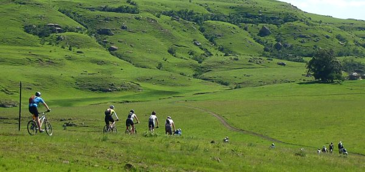
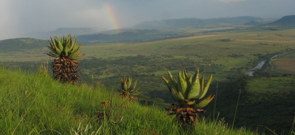

TUGELA RIVER MOUNTAIN BIKE TOURS
Training for a multi-day stage event or tiring of your same old routes? Need some hills to sweat and new track to tame... or maybe just a weekend away from the rat race? Just 2.5 hrs from Durban and 3.5 hrs from Johannesburg, the Tugela Valley makes for an easy weekend getaway of trail blazing through mountainous foothills, private game reserve and historic battlefields.
We can tailor a tour to your group's fitness and skill level, so whether you're a single-track maniac or a dirt-roadie looking for time in the saddle, we have a route to suit. Most of the riding takes place on private farms and reserves, inaccessible to the general public. Day rides can be arranged on prior request but we recommend a 2 - 3 day tour to really experience all that area has to offer.
Starting out in the foothills of the Drakensberg, groups can chose between routes in the Cathedral Peak or Champagne valley. For the fit, the now famous Bezuidenhout's Pass (near Sterkfontein dam) can be descended as part of a long-day circular route. From the foothills of the Berg, we'll head to a bush lodge perched on the banks of the Tugela, where two days of red earth trailblazing await. From the smooth flowing tracks along the rivers edge to a rock and roll descent off Spioenkop Mountain - there are routes to tantalise and test all levels of rider.
Overnighting in bush lodge accommodation, the vibe is relaxed with enough time to float on a tube down the river or kick-back under an Acacia, beer in hand, reminiscing about the single-track of the day.
